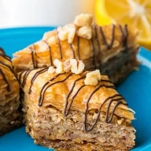

Baklava

Baklava, garnished with chocolate drizzle and chopped walnuts
Baklava's origins are debated, but it's generally believed to have roots in the ancient Assyrian Empire, with the version we know today evolving during the Ottoman Empire, particularly in the kitchens of the Topkapi Palace in Istanbul. This baklava is flaky, crisp, tender and perfectly balanced with the honey-lemon syrup. This homemade baklava is so much better than any store-bought version.
Ingredients
- 16 oz phyllo dough, thawed by package instructions
- 1 1/4 cups unsalted butter, 10 oz or 2 1/2 sticks, melted
- 1 lb walnuts, finely chopped, (about 4 1/4 cups unprocessed)
- 1 tsp ground cinnamon
- 1 cup granulated sugar
- 2 Tbsp lemon juice, juice of 1/2 lemon
- 3/4 cup water
- 1/2 cup honey
- Melted chocolate chips & chopped walnuts for garnish, optional
Steps
Prep
- Thaw phyllo dough by package instructions (this is best done overnight in the fridge, then place it on the counter for 1 hr before starting your recipe to bring it to room temp).
- Trim phyllo dough to fit your baking dish. My phyllo package had 2 rolls with a total of 40 sheets that measured 9x14 so I had to trim them slightly. You can trim one stack at a time then cover with a damp towel to keep from drying out.
- Butter the bottom and sides of a 13x9 non-stick baking pan.
Honey Sauce
- In a medium saucepan, combine 1 cup sugar, 1/2 cup honey, 2 Tbsp lemon juice, and 3/4 cup water. Bring to a boil over med/high heat, stirring until sugar is dissolved, then reduce heat to med/low and boil additional 4 min without stirring.
- Remove from heat and let syrup cool while preparing baklava.
Making the Baklava
- Preheat oven to 375˚F
- Pulse walnuts 10 times in a food process or until coarsely ground/ finely chopped. In a medium bowl, stir together: 4 cups finely chopped walnuts and 1 tsp cinnamon.
- Place 10 phyllo sheets into baking pan one at a time, brushing each sheet with butter once it's in the pan before adding the next (i.e. place phyllo sheet into pan, brush the top with butter, place next phyllo sheet in pan, butter the top, etc. etc.). Keep remaining phyllo covered with a damp towel at all times. Spread about 1/5 of nut mixture (about 3/4 cup) over phyllo dough.
- Add 5 buttered sheets of phyllo, then another layer of nuts. Repeat x 4. Finish off with 10 layers of buttered phyllo sheets. Brush the very top with butter.
- Cut pastry into 1 1/2" wide strips, then cut diagonally to form diamond shapes. Bake at 325˚F for 1 hour and 15 min or until tops are golden brown.
- Remove from oven and immediately spoon cooled syrup evenly over the hot baklava (you'll hear it sizzle). This will ensure that it stays crisp rather than soggy. Let baklava cool completely, uncovered and at room temp. For best results, let baklava sit 4-6 hours or overnight at room temperature for the syrup to penetrate and soften the layers. Garnish baklava with finely chopped nuts or drizzle with melted chocolate. Store at room temp, covered with a tea towel for 1 to 2 weeks.
Home